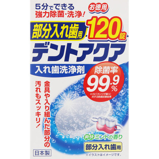
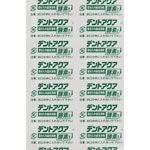

返回列表
产品名称：ＭＫ デントアクア 部分入れ歯用洗浄剤

ライオンケミカル ＭＫ デントアクア 部分入れ歯用洗浄剤 １２０錠
メーカー ライオンケミカル
JANコード 4900480430709
商品の特徴
５分でできる強力除菌・洗浄！
- 成分・分量
- 【成分】
漂白剤（過硫酸塩、過ホウ酸塩）、陰イオン系界面活性剤、酵素、漂白活性化剤、炭酸塩、クエン酸、重炭酸塩、結合剤、滑沢剤、香料、色素
- 用法及び用量
- 【使用方法】
（１）約１５０ｍｌの水またはぬるま湯に本品を１錠入れてください。（冬場など水温が低いと発泡が弱まりますので、ぬるま湯でのご使用をお薦めします。）
（２）入れ歯を５分程度浸してください。（一晩浸すと、より高い洗浄効果を得られます。）
（３）洗浄を終えたら水でよくすすいでください。